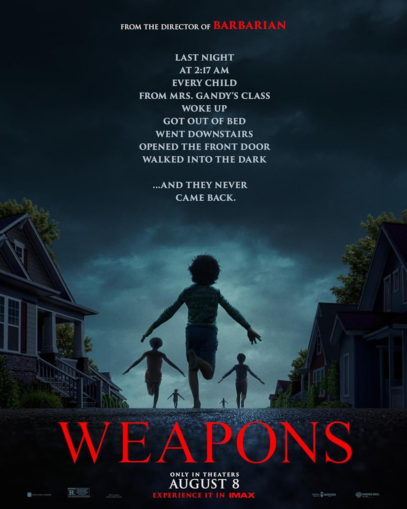

A class of seventeen elementary school students who mysteriously
vanish in the middle of the night, prompting a community-wide search and investigation. As the
search progresses, residents of the town become increasingly disfigured and homicidal, leading
to a race against time to uncover the truth behind the disappearances
Caught Stealing
Sony announced the release of Caught Stealing to replace the
release of Insidious since the latter has been pushed back a year. Set in the 90s, the film is based
on Charlie Hustons book series and follows Hank Tompson (Austin Butler), a former baseball player who
is thrust into a world of crime in New York City. Zoë Kravitz and Bad Bunny star alongside Butler in this
film.

Weapons (2025)
Weapons Trailer
Past Events
Superman
Superman is back! The Man of Steel is making
his way back into theatres this week! As comic book films all too often go
through nowadays, the film will likely be divisive, mostly between the lovers
of the previous iteration of the franchise and those who are excited about the
franchises new direction, and it is a new direction, almost a 180-degree turn.
But, after five previous supermen in the last 40 years filled with Film and TV projects,
this refresh of the Superman franchise was, frankly, refreshing.
Fantastic Four
The Fantastic Four, Reed Richards, Sue Storm, Johnny Storm,
and Ben Grimm, face their greatest challenge yet: defending Earth from Galactus and his herald,
the Silver Surfer. The team must balance their heroic duties with the strength of their family
bond as they navigate a retro-futuristic 1960s setting. The fate of the planet hangs in the balance
as they confront this cosmic threat.